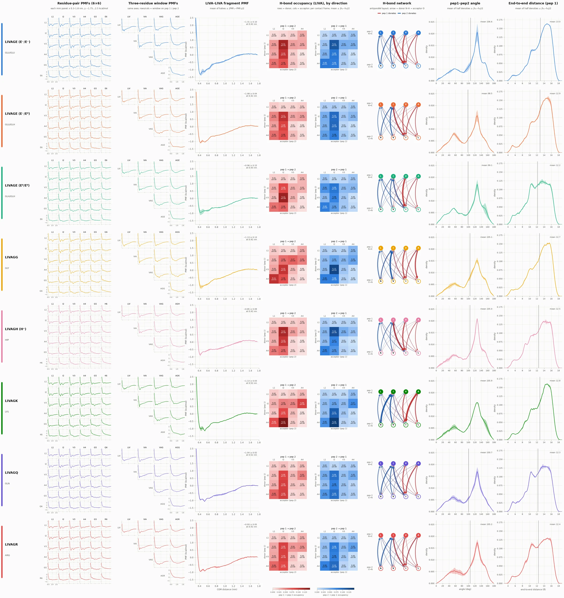

Two-peptide MD · 60 mM · parallel · Amber · 300 K
LIVAGX peptide PMFs — 60 mM parallel
Potentials of mean force between two LIVAGX hexapeptides for eight variants of residue 6 (E in three protonation states, G, H+, K, Q, R): 36 residue pairs, ten three-residue window pairs and the LIVA fragment, each from two trajectory halves; plus the structure of LIVA–LIVA contact frames per half.
- Snapshot built
- 2026-10-28 15:19 PDT
- Git HEAD at build
78b84b3· latest tagsnapshot-2026-10-28_1514- Data synced
- 2026-10-28 15:19
- Snapshot files
- 1,088 copied · 32 too large · 61 excluded
Systems
Click a system for its original plots, well-depth tables, top H-bonds and file inventory. Contact frames are frames with LIVA–LIVA distance < 7 Å out of 270,000 per half. Wells are the minimum of the mean-of-halves PMF (zero at 1.8 nm); ± is |PMF1−PMF2|/2 at the minimum.
| System | Sequence | Residue 6 (Amber) | Charge / protonation | LIVA–LIVA contact frames half 1 / half 2 | Deepest pair well mean of halves | LIVA–LIVA well mean of halves | Source folder |
|---|---|---|---|---|---|---|---|
| LIVAGE (E⁻/E⁻) | LIVAGE | GLU/GLU | both Glu charged | 115,255 / 127,902 42.7% / 47.4% of 270,000 | −1.45 kcal/mol I2–V3 at 0.63 nm | −1.31 ± 0.10 at 0.42 nm | livage/ |
| LIVAGE (E⁻/E⁰) | LIVAGE | GLU/GLH | one Glu charged, one neutral (GLH) | 106,611 / 104,111 39.5% / 38.6% of 270,000 | −1.33 kcal/mol I2–V3 at 0.63 nm | −1.08 ± 0.04 at 0.42 nm | livage/ |
| LIVAGE (E⁰/E⁰) | LIVAGE | GLH/GLH | both Glu neutral (GLH) | 86,805 / 98,408 32.1% / 36.4% of 270,000 | −1.25 kcal/mol V3–I2 at 0.62 nm | −0.96 ± 0.15 at 0.43 nm | livage/ |
| LIVAGG | LIVAGG | GLY | neutral | 114,812 / 106,125 42.5% / 39.3% of 270,000 | −1.37 kcal/mol V3–V3 at 0.61 nm | −1.13 ± 0.13 at 0.42 nm | livagg/ |
| LIVAGH (H⁺) | LIVAGH | HIP | His doubly protonated (HIP, +1) | 83,290 / 80,011 30.8% / 29.6% of 270,000 | −1.02 kcal/mol V3–I2 at 0.63 nm | −0.85 ± 0.09 at 0.42 nm | livagh/ |
| LIVAGK | LIVAGK | LYS | Lys +1 | 99,653 / 106,006 36.9% / 39.3% of 270,000 | −1.32 kcal/mol I2–V3 at 0.61 nm | −1.13 ± 0.03 at 0.52 nm | livagk/ |
| LIVAGQ | LIVAGQ | GLN | neutral | 99,455 / 92,785 36.8% / 34.4% of 270,000 | −1.31 kcal/mol V3–I2 at 0.62 nm | −1.04 ± 0.02 at 0.52 nm | livagq/ |
| LIVAGR | LIVAGR | ARG | Arg +1 | 91,464 / 86,889 33.9% / 32.2% of 270,000 | −1.24 kcal/mol I2–V3 at 0.63 nm | −0.93 ± 0.05 at 0.42 nm | livagr/ |
Overview
Every PMF in one figure: the 6×6 residue-pair grid, the three-residue windows and LIVA–LIVA, all eight systems overlaid in their fixed colours. Click a figure to open it full size.

Overview: all PMFs, all systems overlaid (mean of halves)
Every PMF for every system in one figure, one line per system in its fixed colour. (a) the 36 residue-pair PMFs as a 6×6 grid (row = position on peptide 1, column = position on peptide 2, X = residue 6); (b) the 10 three-residue window PMFs as the upper triangle of a 4×4 grid; (c) the LIVA–LIVA fragment PMF, dots mark each system's minimum. Panels that involve residue 6 have a tinted background. All panels share x (0.3–1.8 nm COM distance) and y (−1.75 to 2.5 kcal/mol, repulsive wall clipped). As in pmf_from_cpptraj.py each PMF is −kT ln P(r) of the raw distance histogram zeroed at 1.8 nm, no r² Jacobian. Pair PMFs: mean of the two trajectory halves. Well depths are tabulated in figures/overview/pair_well_depths_mean.csv.


Overview: all PMFs, all systems overlaid (full-trajectory pairs)
Every PMF for every system in one figure, one line per system in its fixed colour. (a) the 36 residue-pair PMFs as a 6×6 grid (row = position on peptide 1, column = position on peptide 2, X = residue 6); (b) the 10 three-residue window PMFs as the upper triangle of a 4×4 grid; (c) the LIVA–LIVA fragment PMF, dots mark each system's minimum. Panels that involve residue 6 have a tinted background. All panels share x (0.3–1.8 nm COM distance) and y (−1.75 to 2.5 kcal/mol, repulsive wall clipped). As in pmf_from_cpptraj.py each PMF is −kT ln P(r) of the raw distance histogram zeroed at 1.8 nm, no r² Jacobian. Pair PMFs: whole trajectory after dropping the first 5% of frames (windows and fragment exist only as halves, so b and c stay mean of halves). Well depths are tabulated in figures/overview/pair_well_depths_full.csv.


Per-system overview: PMFs, H-bonds, angle, end-to-end
One row per system, seven analyses. Columns 1–3: residue-pair (6×6, row = position on peptide 1, column = position on peptide 2), three-residue window (upper triangle) and LIVA–LIVA PMFs, all the mean of the two trajectory halves with a ±|PMF₁−PMF₂|/2 band; every PMF panel shares x 0.3–1.8 nm and y −1.75 to 2.5 kcal/mol (−kT ln P(r), zeroed at 1.8 nm, no r² Jacobian). Column 4: inter-peptide backbone H-bond occupancy over the LIVA positions (the cpptraj mask), split by direction as in the original hbond heatmaps (left: peptide 1 N–H donates to peptide 2 O; right: peptide 2 donates to peptide 1; rows = donor, columns = acceptor; system colour = peptide 1 donates, gray = peptide 2 donates, both on the same 0–max range), per LIVA–LIVA contact frame, mean ± half difference. Column 5: the same H-bonds as directed arrows (donor N–H → acceptor O; system colour = peptide 1 donates, gray = peptide 2) on the circular layout of the original analysis script (filled nodes = peptide 1, open = peptide 2); width and opacity ∝ mean occupancy on one scale for all rows, bonds below 0.005 not drawn. Columns 6–7: pep1–pep2 vector angle (contact frames) and peptide-1 end-to-end Cα distance (all frames), mean of the two half densities with ±|h₁−h₂|/2 band, vertical line = mean; shared axes down each column. Caveat: in the source cpptraj input the second vector is :9→:12 (ACE→Val of peptide 2) while the first is :2→:5 (Leu→Ala of peptide 1), probably an off-by-one for :10→:13, so the angle is between two slightly different segments.

Explore
Compare one plot across systems
Each original plot type side by side for all eight systems, with a lightbox to flip between them.
9 plot types × 8 systemsAcross systems
The same PMF overlaid for all eight systems, well-depth maps and residue-6 (X) focus.
9 figuresHalved structure
Structure of LIVA-LIVA contact frames per trajectory half: contacts, H-bonds, angle, end-to-end distance, backbone dihedrals.
8 figuresConvergence QC
Convergence checks: first half vs second half, full trajectory vs mean of halves.
3 figuresInteractive explorer
Pick systems and residue pairs and overlay their PMF curves in the browser.
interactiveData inventory
Every file of every analysis folder: what was copied, what is too large, where originals live.
1,181 filesMethods & notes
PMF definition, halves, frame ranges, residue numbering, known caveats, how to update.
read firstChangelog
One entry per git snapshot, with the data files that changed per system.
7 snapshots